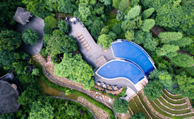
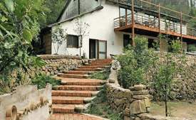
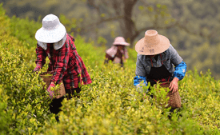

我们倡导可持续发展
常青度假村在设计和运营上都倡导可持续发展理念，尤其是在建造过程中极大程度地保留和利用自然环境。 我们打破传统惯例成为可持续发展的先锋，为了给客户提供更加创新和难忘的体验，这些独特的核心价值观 引领我们一直在做真善美的事情，例如：
- 无论何时都雇佣当地的雇员和服务
- 保护当地环境，利用循环系统对废物进行循环利用
- 支持当地的经济，充分利用资源，购买当地种植的食材和当地生产的建材
- 鼓励客人与我们一起加入可持续性的行为
- 坚持从当地大批量购买以减少交通以及包装费用
- 使用特有的净水方式对水资源进行净化以减少浪费
- 通过雇佣当地员工，培训以及增加当地就业机会来回馈当地社区
- 使用能生物降解的环保肥皂以及清洁用品
- 为当地的政府，学校以及国际学校组织长期的环境教育项目
- 为当地劳动力提供训练并对员工进行可持续性相关教学
设计 • 建造 • 运营
我们的度假村由我们自己设计，建造和运营。确保在设计、建材、环保及节能方面都达到最高的标准之外 ，还要提供顶极的舒适环境以及最真诚的服务。毫无疑问，由我们亲手设计及建造的度假村，只有我们深 切了解如何去经营它，才能将它的优点发挥得淋漓尽致。
-
设计理念常青度假村是由高天成的夫人叶凯欣及上海Benwood的建筑师共同设计。Studio Shanghai以设计上海的“新天地”闻名，除此之外，还有不少著名的建筑作品遍及中国及亚洲 。常青的设计，著重于和周围的自然环境融为一体，使客人能无拘无束的接近大自然。平和、静 谧及家居情怀是我们在设计上的追求。
-
建造原则所有的建造过程都在常青团队的监管下进行，以确保达到最好的品质及最高的标准。建造过程以当地出产的建材以及传统的建筑工艺为主配合先进的施工技术进行。
-
经营管理我们在经营方面的真心绝不亚于创建的用心。我们提供个人化又极具专业的服务品质，却不偏离“返璞归真”的初衷。在经营上，我们雇用本地人，利用当地资源，使用当地物产，尽量做到节约能源、减少浪费，最终却仍然能以提供最舒适的享受为傲。我们给予客人的不仅是一个在完全放松的环境里得以修复身心的地方，在互道珍重，挥一挥手，不带走一片云彩的时候，客人会觉得不虚此行，满载而归。
 扫码或搜索“常青naked”关注我们
扫码或搜索“常青naked”关注我们